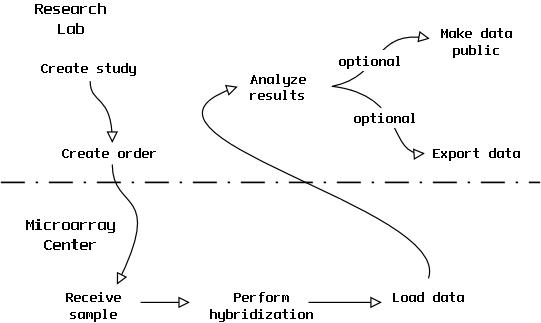
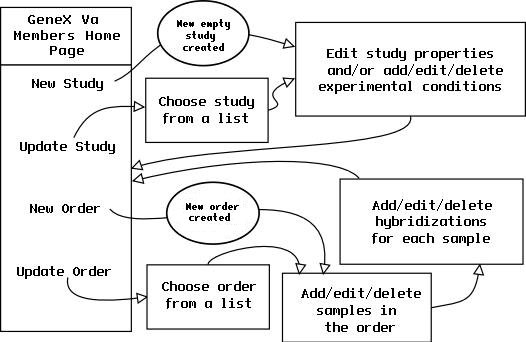

| Web Interface Work flow |
The web interface consists of a number of html pages and Perl scripts
that work together to allow investigators and curators to document their
work, to upload data files, and to perform analyses of data.
The first figure show how samples and data progress through
GEOSS. All of the activities above the dotted line are performed by researchers.
Below the dotted line is a simplified diagram of work flow within the
microarray center.
The staff of the microarray center has a special curator-only area in
GEOSS. The staff is small in number, and they are personally trained by
the GEOSS administrators, so we won't cover their user interface.

Researchers main activities are:
- creating studies
- generating orders
- analyzing data
For the purposes of GEOSS, a "study" is a set of related experimental
conditions. An experimental condition is any distinct set of treatments/protocols
which are used to subset data during analysis.
Orders are generated to request hybridizing samples to gene chips. The
researcher describes the samples in the GEOSS system, and then delivers
the samples to the microarray center. Hybridizations are requested on
a per-sample basis. Each sample can have multiple hybridizations, and
a specific gene chip layout (set of probes) can be selected for each hybridization.
We have assumed the use of Affymetrix chips, where there are only a small
number of chips layouts, each with a known fixed set of probes.
The personnel in the microarray center will verify the completeness of
the order, perform the hybridization and subsequent raw data analysis,
and then load the data into GEOSS.
The second figure describes the work flow followed by investigators as
they create studies and orders..
